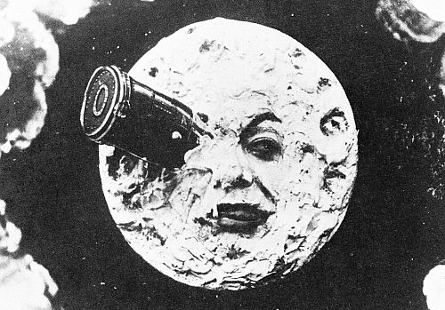
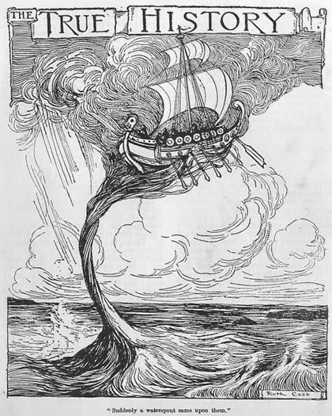
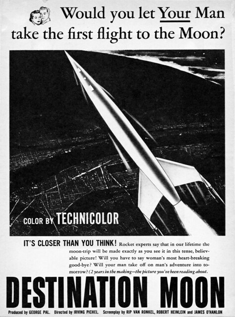
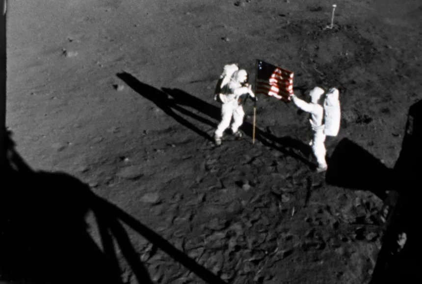

Although humans didn't really reach the Moon until a half century ago, we've ventured there in our minds for millennia.
this iconic shot from the 1902 film A Trip to the Moon shows the fabled Man in the Moon embedded with a massive, bullet-like spacecraft that was launched from Earth by a giant cannon.
It’s been 50 years since humans first landed on the Moon. But for how long have we rehearsed those first steps in our imaginations? This we do know: We’ve been telling each other tales about our Moon-landing dreams for nearly 2,000 years.
The earliest known written story about people traveling to the Moon was by Lucian of Samosata, a Syrian-Greek writer born around 125 AD. His travels throughout the Mediterranean world were the basis for the fictional tales in his True Stories, an often bawdy satire of Homer’s revered epic the Odyssey. One such story tells of the journey Lucian and 50 companions take on a boat carried to the Moon by a giant waterspout. When they arrive on the lunar surface, they’re greeted by a race of three-headed vultures and soon find themselves in the middle of a war with another species. Eventually they make their way back to Earth and experience more fantastic adventures. Lucian’s lunar tale is the earliest known piece of fiction that depicts space travel, a Moon landing, aliens, and interplanetary war. Some 15 centuries later, three people changed our view of our place in the universe forever. Nicolas Copernicus published his heliocentric theory of the universe, which replaced the Earth with the Sun at the center of the solar system; Galileo Galilei spotted sunspots, the phases of Venus, and moons circling Jupiter; and Johannes Kepler showed us that the planets circle the Sun in ellipses.
Approaching the Apollo era Films had been around in one form or another since the 1880s, but public screenings where people paid admission fees first started in 1895. In 1902, French filmmaker Georges Méliès made his landmark 21-minute film Le Voyage dans la Lune (A Trip to the Moon). In it, the spaceship is a bullet-like projectile a la Verne, but the plot is based on the Wells novel. Le Voyage dans la Lune is often regarded as the first science-fiction film. By the 1920s, the art of filmmaking had advanced far beyond Méliès. In 1929, Austrian director Fritz Lang released his follow-up to his futuristic flick Metropolis (1927). Entitled Woman in the Moon, it’s about six people (five men and a women) who travel to the Moon in search of gold. The plotline and acting resemble a TV soap opera, and the Moon has normal gravity and a breathable atmosphere on its far side. But the special effects are remarkable. Especially impressive are the rocket launch and the scenes as the ship slips around behind the Moon.
From the 1930’s through the end of World War II, sci-fi stories with lunar themes were mostly about exploration, aliens, and the Moon’s desolate environment, not about first landings. That began to change at the end of the war. One story that stands out is the 1950 Robert A. Heinlein novella “The Man Who Sold the Moon.”
Heinlein’s tale is about a wealthy American businessman named D.D. Harriman who is obsessed with being the first man to set foot on the Moon. At a time when neither the technology nor public interest exists for a Moon landing, Harriman has the money, the PR savvy, and the con-man sensibilities to make it happen. And he does. The science is well-crafted, the characters are believable, and the ending? Ah, the ending. Harriman’s billionaire buddy backers won’t let him in the spaceship to become the first man to set foot on the Moon; he’s too valuable as the front-man selling the dream of spaceflight-for-all back on Earth. Heinlein also played a role in another first Moon landing story. Except this one was a movie — and also a classic. Produced by George Pal and Irving Pichel, Destination Moon was released in 1950. Heinlein was approached to help write the script. He drew in part on the plot of his juvenile novel Rocket Ship Galileo, but he also clearly incorporated plot lines from “The Man Who Sold the Moon.” The movie itself is a well-plotted, reasonably well-acted story of corporations rather than governments providing the money and know-how to put a man on the Moon. There’s drama a-plenty, with dangerous situations solved by smart use of science and engineering. The movie accurately depicts weightlessness, the landing itself, and the lunar environment. The “cold equations” climax — where one of the crew must be left behind in order for the rest to make it home — is solved as only engineers could.
During the time that has passed since the launching of the first artificial satellite in 1957, astronauts have traveled to the moon, probes have explored the solar system, and instruments in space have discovered thousands of planets around other stars. GRADES 4 - 12 SUBJECTS Astronomy, Earth Science, Social Studies, U.S. History, World History
IMAGE Apollo 11 Astronauts on Moon A less belligerent, but no less competitive, part of the Cold War was the space race. The Soviet Union bested its rival at nearly every turn, until the U.S. beat them to the finish line by landing astronauts on the moon. NASA PHOTOGRAPH
We human beings have been venturing into space since October 4, 1957, when the Union of Soviet Socialist Republics (U.S.S.R.) launched Sputnik, the first artificial satellite to orbit Earth. This happened during the period of political hostility between the Soviet Union and the United States known as the Cold War. For several years, the two superpowers had been competing to develop missiles, called intercontinental ballistic missiles (ICBMs), to carry nuclear weapons between continents. In the U.S.S.R., the rocket designer Sergei Korolev had developed the first ICBM, a rocket called the R7, which would begin the space race. This competition came to a head with the launch of Sputnik. Carried atop an R7 rocket, the Sputnik satellite was able to send out beeps from a radio transmitter. After reaching space, Sputnik orbited Earth once every 96 minutes. The radio beeps could be detected on the ground as the satellite passed overhead, so people all around the world knew that it was really in orbit. Realizing that the U.S.S.R. had capabilities that exceeded U.S. technologies that could endanger Americans, the United States grew worried. Then, a month later, on November 3, 1957, the Soviets achieved an even more impressive space venture. This was SputnikII, a satellite that carried a living creature, a dog named Laika. Prior to the launch of Sputnik, the United States had been working on its own capability to launch a satellite. The United States made two failed attempts to launch a satellite into space before succeeding with a rocket that carried a satellite called Explorer on January 31, 1958. The team that achieved this first U.S. satellite launch consisted largely of German rocket engineers who had once developed ballistic missiles for Nazi Germany. Working for the U.S. Army at the Redstone Arsenal in Huntsville, Alabama, the German rocket engineers were led by Wernher von Braun and had developed the German V2 rocket into a more powerful rocket, called the Jupiter C, or Juno. Explorer carried several instruments into space for conducting science experiments. One instrument was a Geiger counter for detecting cosmic rays. This was for an experiment operated by researcher James Van Allen, which, together with measurements from later satellites, proved the existence of what are now called the Van Allen radiation belts around Earth. In 1958, space exploration activities in the United States were consolidated into a new government agency, the National Aeronautics and Space Administration (NASA). When it began operations in October of 1958, NASA absorbed what had been called the National Advisory Committee for Aeronautics (NACA), and several other research and military facilities, including the Army Ballistic Missile Agency (the Redstone Arsenal) in Huntsville. The first human in space was the Soviet cosmonaut Yuri Gagarin, who made one orbit around Earth on April 12, 1961, on a flight that lasted 108 minutes. A little more than three weeks later, NASA launched astronaut Alan Shepard into space, not on an orbital flight, but on a suborbital trajectory—a flight that goes into space but does not go all the way around Earth. Shepard’s suborbital flight lasted just over 15 minutes. Three weeks later, on May 25, President John F. Kennedy challenged the United States to an ambitious goal, declaring: “I believe that this nation should commit itself to achieving the goal, before the decade is out, of landing a man on the moon and returning him safely to Earth." In addition to launching the first artificial satellite, the first dog in space, and the first human in space, the Soviet Union achieved other space milestones ahead of the United States. These milestones included Luna 2, which became the first human-made object to hit the Moon in 1959. Soon after that, the U.S.S.R. launched Luna 3. Less than four months after Gagarin’s flight in 1961, a second Soviet human mission orbited a cosmonaut around Earth for a full day. The U.S.S.R. also achieved the first spacewalk and launched the Vostok 6 mission, which made Valentina Tereshkova the first woman to travel to space. During the 1960s, NASA made progress toward President Kennedy’s goal of landing a human on the moon with a program called Project Gemini , in which astronauts tested technology needed for future flights to the moon, and tested their own ability to endure many days in spaceflight. Project Gemini was followed by Project Apollo, which took astronauts into orbit around the moon and to the lunar surface between 1968 and 1972. In 1969, on Apollo11, the United States sent the first astronauts to the Moon, and Neil Armstrong became the first human to set foot on its surface. During the landed missions, astronauts collected samples of rocks and lunar dust that scientists still study to learn about the moon. During the 1960s and 1970s, NASA also launched a series of space probes called Mariner, which studied Venus, Mars, and Mercury. Space stations marked the next phase of space exploration. The first space station in Earth orbit was the Soviet Salyut 1 station, which was launched in 1971. This was followed by NASA’s Skylab space station, the first orbital laboratory in which astronauts and scientists studied Earth and the effects of spaceflight on the human body. During the 1970s, NASA also carried out Project Viking in which two probes landed on Mars, took numerous photographs, examined the chemistry of the Martian surface environment, and tested the Martian dirt (called regolith) for the presence of microorganisms. Since the Apollo lunar program ended in 1972, human space exploration has been limited to low-Earth orbit, where many countries participate and conduct research on the International Space Station. However, unpiloted probes have traveled throughout our solar system. In recent years, probes have made a range of discoveries, including that a moon of Jupiter, called Europa, and a moon of Saturn, called Enceladus, have oceans under their surface ice that scientists think may harbor life. Meanwhile, instruments in space , such as the Kepler Space Telescope, and instruments on the ground have discovered thousands of exoplanets, planets orbiting other stars. This era of exoplanet discovery began in 1995, and advanced technology now allows instruments in space to characterize the atmospheres of some of these exoplanets. Reference A Brief History of Space Exploration Articles & Profiles Key dates in history of space exploration NASA: 60 Years of Space Exploration